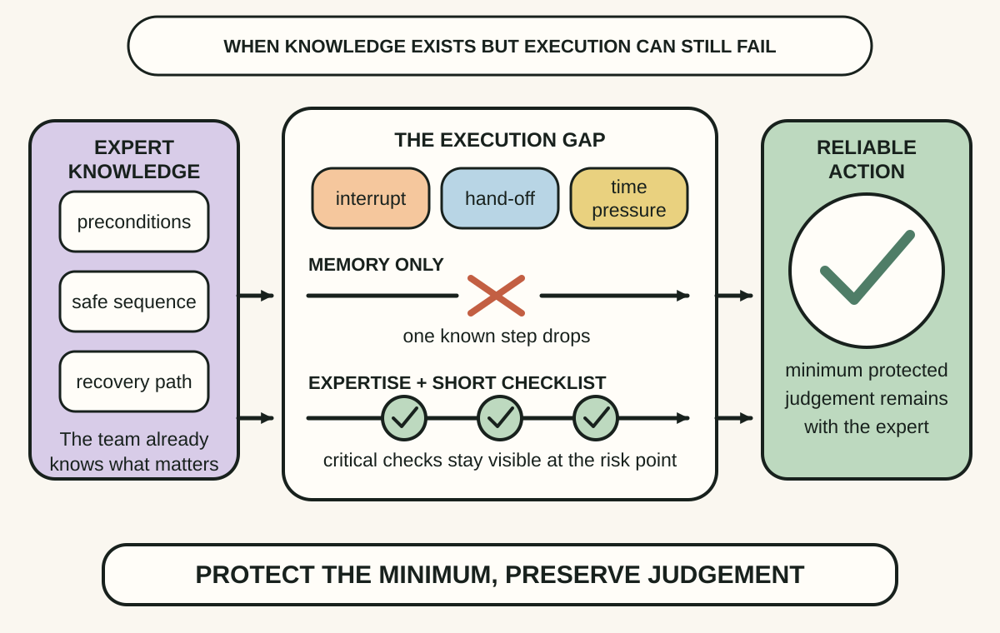
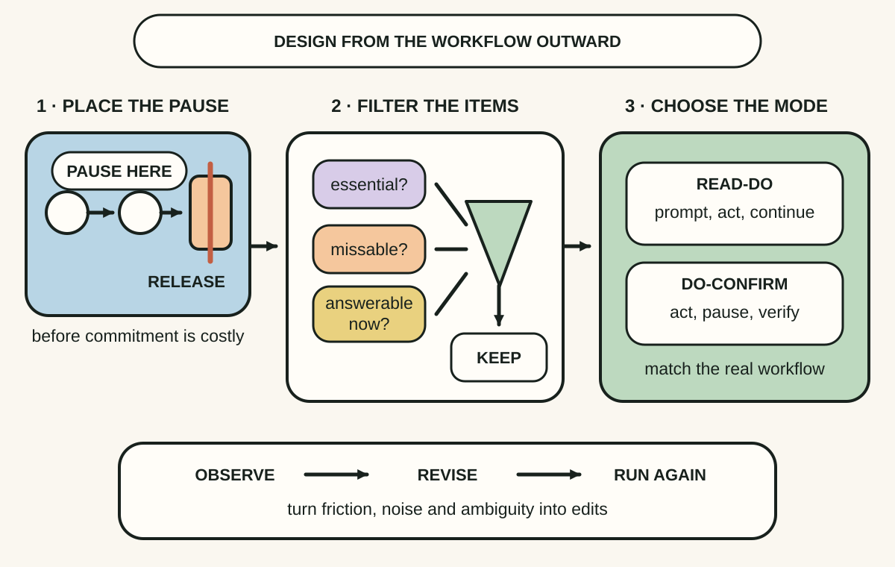
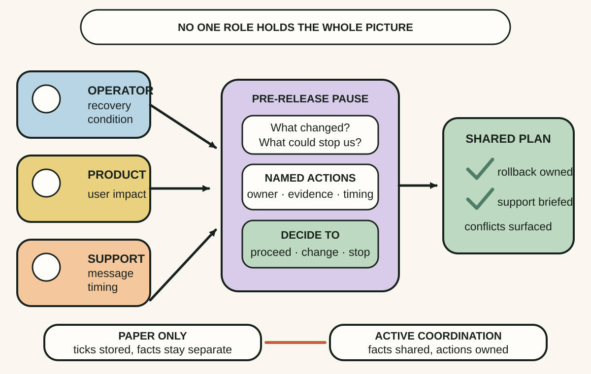

Daily lesson ·
The Checklist Manifesto
Protect complex work from avoidable omissions by placing a short, tested checklist at the moment of risk and using the pause to coordinate the people who hold different parts of the truth.
Idea 1
Use a checklist for the execution gap #
The idea
Gawande distinguishes failures caused by missing knowledge from failures that occur when people know the necessary steps but do not apply them reliably. In complex work, expertise can coexist with omissions because attention is divided across urgency, variation, interruptions and hand-offs.
A checklist protects a small set of critical steps at the point where memory is vulnerable. It does not encode the whole craft or make every case routine. By securing the minimum, it leaves experts more attention for the judgement that the unusual case still requires.

Why it matters
Teams often respond to a missed step with more training or a longer procedure even when the knowledge was already present. Diagnosing an execution gap points to a lighter control: a brief prompt at the moment it can change the action.
Apply it today
Choose one recurring task where a known omission could cause rollback, rework, data loss or a poor hand-off. Name the exact moment just before the risk becomes hard to reverse.
Separate steps that require expert judgement from critical actions that are known, observable and easy to miss. Only the second group belongs on the first checklist draft.
Caveat or failure mode
A checklist cannot repair missing knowledge, weak system design, impossible workload or incentives that reward bypassing the process. It can also distract during genuinely novel work if every situation is forced into a routine script.
Idea 2
Put the checklist at the moment of risk #
The idea
Gawande argues that a useful checklist has a clear pause point and contains only the critical actions or confirmations most worth protecting. An exhaustive procedure competes with the work, so users skim it, resent it or perform the document instead of the task.
He distinguishes read-do lists, where people act step by step, from do-confirm lists, where trained people complete a segment from memory and then pause to verify the essentials. The right mode depends on the workflow, and the draft must be tested in real conditions and revised.

Why it matters
A long checklist stored in a wiki does not change behaviour at the point of consequence. A deliberate pause and a small number of discriminating items make the prompt usable when attention and time are scarce.
Apply it today
Mark one pause point in the actual flow: before data migration, before external release, before a hand-off or before an irreversible command.
For each proposed item ask three questions: Is it essential? Is it plausibly missed? Can the user answer or act now? Remove anything that fails the filter.
Caveat or failure mode
Brevity is not a reason to omit a necessary safeguard, and a checklist copied from another team may encode the wrong hazards. If users repeatedly work around an item, investigate the workflow and the control instead of blaming compliance.
Idea 3
Make the pause a team conversation #
The idea
Gawande's strongest checklists do more than cue individual memory. They create a moment when people with different roles identify themselves, share expected difficulties, confirm the common plan and make concerns speakable before action becomes hard to reverse.
The form alone is not the intervention. World Health Organization guidance emphasises participation, local adaptation, leadership, coaching and feedback. The later Ontario study, which found no significant outcome improvement after mandatory adoption, reinforces the limit: distribution and compliance do not guarantee meaningful use.

Why it matters
Complex failures often cross role boundaries. No individual sees the deployment condition, customer impact, support load and recovery path at once, so a structured conversation can expose contradictions that an individually completed form cannot.
Apply it today
Add one role-specific prompt to the pause, such as the operator's recovery concern, the product owner's user impact or the support lead's communication risk.
End with a named action owner and a decision: proceed, change the plan or stop. After the first use, ask which prompt produced information and which only produced a tick.
Caveat or failure mode
A scripted pause can become theatre when hierarchy silences concerns, time pressure makes the outcome predetermined or leaders measure completion instead of learning. Psychological safety and authority to stop remain design requirements outside the checklist itself.
Knowledge check · 6 questions
Learning check
Answer all 6, then check your answers. Your first result stays in this browser, and each explanation appears after you check. A 3-question review can appear on the homepage from tomorrow.
6 questions not yet answered.
Today's experiment · 10 minutes
Build one pause-point checklist
- Choose one recurring hand-off or irreversible action where a known omission has a meaningful consequence.
- Mark the exact pause before commitment, then list the critical steps or facts people sometimes miss.
- Keep only items that are essential, plausibly missed and answerable at that moment.
- Choose read-do or do-confirm, and ask one person from another role to run the list against a recent case.
- Rewrite the first ambiguous item and record one observation that should trigger another revision.
Observable result: You finish with a short checklist anchored to a real pause, one tested wording improvement and evidence about whether it prompts action or conversation.
Retrieval practice
Spaced recall
- From Threat Modeling: which trust boundary in a current change would benefit from a named pause before data or authority crosses it?
- From Make It Stick: why might recalling the critical checks before looking at the list improve both learning and checklist design?
Verification
Source notes
These links support the attributed claims and edition details; applications and extensions are labelled in the lesson.
- Macmillan: The Checklist Manifesto book and excerpt
- WorldCat: The Checklist Manifesto, Metropolitan Books edition
- Atul Gawande in The New Yorker: The Checklist
- World Health Organization: Surgical Safety Checklist tools and implementation
- New England Journal of Medicine: eight-hospital surgical checklist study
- New England Journal of Medicine: Ontario checklist implementation study
- AHRQ Patient Safety Network: What Makes a Good Checklist
One-sentence takeaway